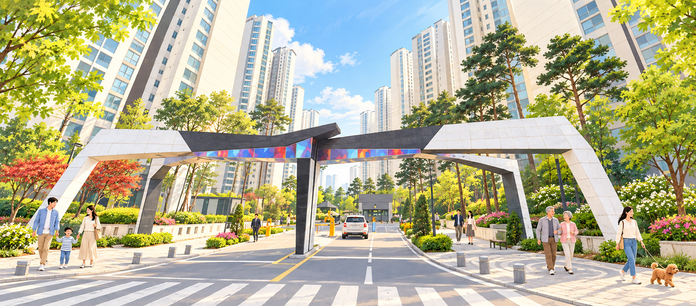

우리 단지 생활 정보
확인된 이용 안내 자료를 준비 중입니다.

OUR STORY
단지가 걸어온 시간과 주민들의 기억을 모으는 공간입니다. 확인된 역사 자료와 사진을 순차적으로 소개합니다.
시영아파트 시절부터 현재까지의 연혁은 원자료 확인 후 게시합니다.
사진, 당시의 이야기, 공개 가능한 기록을 보내주시면 출처와 사용 허락을 확인한 뒤 소개하겠습니다.
LIBRARY
확인된 이용 안내 자료를 준비 중입니다.
원본 양식이 제공되면 항목을 반영합니다. 지금은 온라인 제안서 양식을 이용할 수 있습니다.
제안서 작성하기 ↗출처와 공개 권한을 확인한 자료를 순서대로 게시합니다.
NOTICE
등록된 공지가 없습니다.
NEIGHBORS
등록된 글이 없습니다.
YOUR IDEA
생활 속 불편과 개선 아이디어를 제안해 주세요. 제안은 공식 의결이나 민원 접수가 아닙니다.
제안서를 작성하려면 로그인해 주세요.
등록된 제안이 없습니다.
MY ACCOUNT
로그인하면 내 정보를 관리할 수 있습니다.
ADMIN